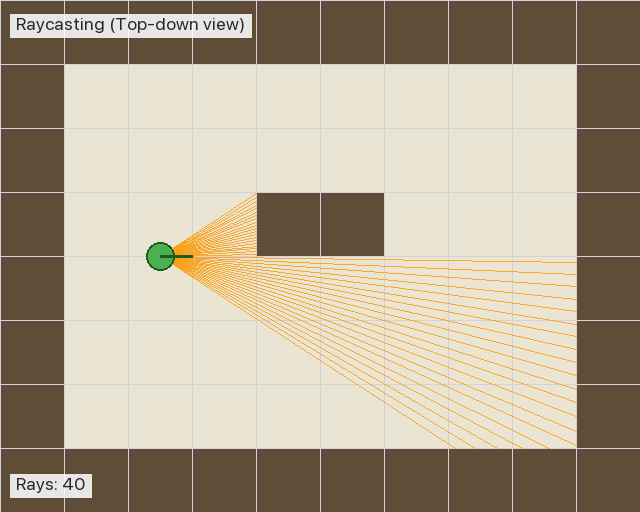

03. レイキャスティングとは — 概念編
ページナビ
◀️ 前 02. パーサー ・ 次 ▶️ 04. DDA アルゴリズム ・ 📚 用語集
このページは何？
cub3D の「3D っぽく見せる魔法」の正体を、まず感覚でつかむページ です。
言葉の解説
- レイキャスティング (raycasting) = 光線投射法
- レイ (ray) = 光線。プレイヤーから伸ばす仮想の直線
実は cub3D の 3D は 本物の 3D ではありません。 2D の地図に たくさんの光線 を飛ばして、「壁までどれくらい遠いか」を測っているだけ。
🎮 実際の cub3D 画面

4 方向の壁が 別々の色/テクスチャ で描かれています:
| 色 | 方向 | テクスチャ |
|---|---|---|
| 🔴 赤 (上) | 天井 | C 225,30,0 |
| 🟠 オレンジ (下) | 床 | F 220,100,0 |
| 🟢 緑 | 東の壁 | EA テクスチャ |
| 🟡 黄 | 西の壁 | WE テクスチャ |
| 🔵 青 | 北の壁 | NO テクスチャ |
🎬 レイキャスティングの動き（概念図）

プレイヤー（緑の丸）から 扇形に広がる光線 がそれぞれ壁まで飛んで、 壁までの距離を測っている のが見えます。視点が回転すると光線の束も一緒に回ります。
💡 ここでつまずく人へ — 「3D ゲーム」とどう違う？
本物の 3D ゲーム（Unreal や Unity など）は 本当に 3 次元空間 を計算します。
レイキャスティングは 2D の地図 に光線を飛ばし、
壁までの距離から「あたかも 3D に見える絵」を描く 見せかけの 3D です。
だからマップは .cub ファイルに 2 次元の文字列 として書かれていて、
天井や床の高さは固定です（プレイヤーは飛べないし、しゃがめない）。
1. 懐中電灯のたとえ
真っ暗な迷路で 懐中電灯 を照らすと、光は壁に当たるところまで届きます。
- 光がすぐ壁に当たる → 壁は近い
- 光が遠くまで伸びる → 壁は遠い
これだけで「距離」が測れます。
flowchart LR
P[プレイヤー] == 光線 ==> W[壁]
P -.->|光の長さ = 壁までの距離| W
style P fill:#4CAF50,color:#fff,stroke:#1B5E20,stroke-width:2px
style W fill:#795548,color:#fff,stroke:#3E2723,stroke-width:2pxポイント
cub3D は 画面の幅の本数だけ 懐中電灯を並べ、 それぞれの光の長さを測って 壁の高さ を計算しています。
2. なぜ 1024 本？
画面の横幅が 1024 ピクセルだから です。
ピクセルとは
画面の最小単位の「点」。画面はこの点を縦横に並べて絵を描きます。
cub3D では画面サイズが includes/cub3d.h に定義されています:
画面の各縦 1 列（1 ピクセル幅）ごとに 1 本の光線 を飛ばすので、 幅が 1024 なら 1024 本必要です。
flowchart LR
Screen[画面<br>横幅 1024px] --> Col1[縦線 1<br>光線 #0]
Screen --> Col2[縦線 2<br>光線 #1]
Screen --> ColDots[... 中略 ...]
Screen --> ColEnd[縦線 1024<br>光線 #1023]
style Screen fill:#E3F2FD3. 全体の流れ
flowchart LR
A[プレイヤーの<br>位置 + 向き] --> B[1024 本の<br>光線を飛ばす]
B --> C[各光線の<br>壁までの距離を測定]
C --> D[距離から<br>壁の高さを計算]
D --> E[縦 1 列ずつ<br>描画]
E --> F[画面に表示]
F --> G[キー入力で<br>位置を更新]
G --> A
style A fill:#E3F2FD
style F fill:#C8E6C9このサイクルが 1 秒間に 60 回 回ります（60 FPS）。
4. 1 本の光線で何をするか
flowchart LR
Start[画面の<br>1px 幅の縦線] --> Ray[専用の光線を<br>1 本飛ばす]
Ray --> Dist[1 マスずつ進んで<br>壁までの距離測定<br>例: 4 マス]
Dist --> Calc["壁の高さ<br>= 768 ÷ 4<br>= 192 px"]
Calc --> Draw[画面中央に<br>192px の縦線<br>を描画]
style Start fill:#E3F2FD
style Draw fill:#C8E6C9具体例（距離別）
| 壁までの距離 | 計算 | 画面上の壁の高さ |
|---|---|---|
| 1 マス（壁すぐそば） | 768 ÷ 1 | 768px（画面いっぱい） |
| 2 マス | 768 ÷ 2 | 384px（画面半分） |
| 4 マス | 768 ÷ 4 | 192px（画面の 1/4） |
| 8 マス（遠い壁） | 768 ÷ 8 | 96px（小さい） |
距離が近いほど大きく、遠いほど小さく 見えるので 3D っぽく感じます。
5. 上から見た地図 vs 画面
| 列 (x) → 行 (y) ↓ |
0 | 1 | 2 | 3 | 4 | 5 | 6 | 7 |
|---|---|---|---|---|---|---|---|---|
| 0 | 🧱 | 🧱 | 🧱 | 🧱 | 🧱 | 🧱 | 🧱 | 🧱 |
| 1 | 🧱 | 🧱 | ||||||
| 2 | 🧱 | 🧱 | ||||||
| 3 | 🧱 | 👤→ | → | → | → | 🧱 | ||
| 4 | 🧱 | 🧱 | ||||||
| 5 | 🧱 | 🧱 | ||||||
| 6 | 🧱 | 🧱 | 🧱 | 🧱 | 🧱 | 🧱 | 🧱 | 🧱 |
- 🧱 = 壁（
1）／ 空欄 = 通路（0）／ 👤 = プレイヤー - x = 列番号（横）、y = 行番号（縦） の順
- C では
map[y][x]の順でアクセスする慣習
| 画面の上下位置 | 表示 |
|---|---|
| 上部 | ☁️ 天井色（単色） |
| 中央 | 🧱 壁（距離が遠いほど小さく） |
| 下部 | 🟫 床色（単色） |
上から見た 2D 地図を元に、プレイヤーから見える絵を作るのがレイキャスティングの仕事。
6. プレイヤー位置が小数な理由
マスの中央に置くため
プレイヤーを マスの中央 に配置します。
.cub ファイルで N を見つけたマスが (3, 2) なら、
実際のプレイヤー位置は (3.5, 2.5) にします。
flowchart LR
A[".cub で N を<br>マス (3, 2) に発見"] --> B["+ 0.5 して中央へ"]
B --> C["プレイヤー位置<br>(3.5, 2.5)"]
style A fill:#FFF9C4
style C fill:#C8E6C9| 値 | 意味 |
|---|---|
| 整数 (3, 2) | 「マスの座標」（格子の左上角） |
| 小数 (3.5, 2.5) | 「マスの中央」（プレイヤーの実際の位置） |
向き (dir) ベクトル
dir は direction（方向）の略。プレイヤーが向いている向きを 2 成分で表します。
| プレイヤーの向き | dir.x | dir.y |
|---|---|---|
| 北（上） | 0 | -1 |
| 南（下） | 0 | +1 |
| 東（右） | +1 | 0 |
| 西（左） | -1 | 0 |
プログラム上の y 軸
画面プログラムでは y が下向きに増える のが慣習。 「北」は「y が減る方向」、「南」は「y が増える方向」。
7. 1 本の光線を追ってみる
画面中央のピクセル（x = 512）に対応する光線の動きを見ましょう。
初期状態
プレイヤー位置 (3.5, 2.5)、東向き（dir = (1, 0)）の場合:
sequenceDiagram
participant Main as main ループ
participant Ray as 光線処理
participant Map as マップ
Main->>Ray: x=512 の光線を飛ばして
Note over Ray: ① camera_x = 0（画面中央）<br>ray.dir = player.dir = (1, 0)
Note over Ray: ② 現在のマス (3, 2)
loop 壁に当たるまで
Ray->>Map: 隣のマスは壁?
Map-->>Ray: いいえ → 1 マス進む
end
Ray->>Map: このマスは壁?
Map-->>Ray: はい!
Note over Ray: ③ 距離 = 3.5 マス
Ray-->>Main: 距離を返す
Note over Main: ④ line_h = 768÷3.5 ≈ 219px<br>で縦線を描画ステップの意味
| # | 処理 |
|---|---|
| ① | 画面位置から光線の向きを決める（camera_x は次ページで解説） |
| ② | 今いるマスの整数座標を取得 |
| ③ | DDA で 1 マスずつ進み、壁まで距離を測る（04 ページで詳しく） |
| ④ | 距離から壁の高さを計算して描画 |
8. 大事な用語まとめ
| 用語 | 意味 | 詳しくはこのページへ |
|---|---|---|
| 光線 (ray) | プレイヤーから伸ばす仮想の線 | 本ページ |
| dir ベクトル | プレイヤーの向き | 本ページ |
| DDA | 格子を効率よく渡る方法 | 04 |
| カメラプレーン (plane) | 視野を決めるベクトル | 05 |
| camera_x | 画面位置を -1 〜 +1 にした値 | 05 |
| 魚眼補正 | 画面端の歪みを直す計算 | 05 |
| 垂直距離 | 正面方向への投影距離 | 05 |
9. 次のページへ
進め方
このページで「レイキャスティングって何？」のイメージはつかめました。 次の 2 ページで「どう計算するの？」を具体的に学びます。
- 04: 壁を見つけるアルゴリズム（DDA）
- 05: 光線の向きと補正（カメラと魚眼）